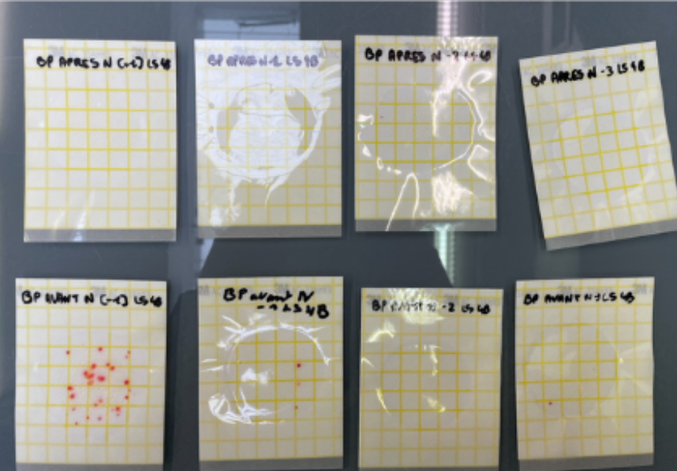
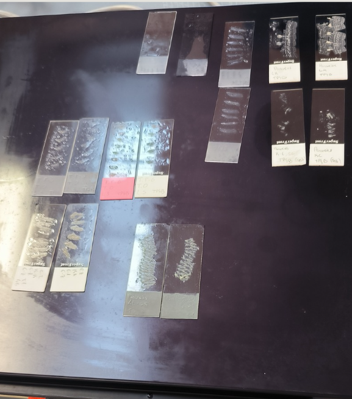
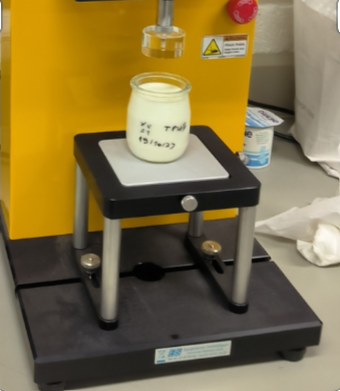

Premier semestre
Réaliser des analyses dans le domaine de la biologie
Apprendre de nouvelles techniques d'analyse. Mesure des paramètres chimiques d'un yaourt, tels que l'acidité Dornic.
Titrage acido-basique, pesée sur balance Sartorius, utilisation de la burette graduée pour dosage à la soude NaOH.
Cette SAé, complémentaire de la 1.4, a été ma première vraie confrontation aux techniques analytiques du BUT. Manipuler la burette, réaliser un dosage en conditions de laboratoire sur un produit aussi concret que le yaourt — c'était une entrée en matière idéale pour comprendre ce que signifie la rigueur en génie industriel agroalimentaire.

Explorer la place d'une cellule
Comprendre et reconnaître des cellules spécifiques à un organe en préparant une coupe histologique.
Paraffinage d'un pancréas de rat, coupe au microtome Leica, coloration Hématoxyline-Éosine et Trichome de Masson, observation microscopique.
Une SAé qui m'a ouvert à une discipline que je ne connaissais pas — l'histologie. Travailler sur du tissu animal, maîtriser des techniques de préparation et de coloration spécifiques, observer au microscope des structures cellulaires précises : c'est une approche du laboratoire très différente de ce qu'on fait habituellement en SAB, et ça m'a donné une vision plus large de ce que recouvre le génie biologique.

Contrôler l'hygiène lors d'une production
Utiliser les connaissances de microbiologie dans un cas concret : prélèvements à l'EHPAD Le Parc (Nancy).
Prélèvements d'air (bio-impacteur) et de surfaces (écouvillons, boîtes contact), ensemencement sur milieux TA/CGA/RODAC, ATP-métrie.
C'est probablement la SAé qui m'a le plus appris en première année — pas tant sur le plan technique, mais sur l'organisation et l'autonomie. On devait tout gérer nous-mêmes : trouver le lieu, prendre contact, planifier les prélèvements en dehors des cours. Travailler dans un EHPAD a aussi donné un sens concret à tout ça : là, l'hygiène ce n'est pas juste une note, ça a de vraies conséquences.

Préparer et mettre en œuvre une production alimentaire
Découvrir les spécialités d'un yaourt, ses qualités ainsi que sa fabrication en conditions semi-industrielles.
Production de yaourt avec tests de texture (Texture Analyser), de pH et de viscosité. Colorimètre Konica-Minolta.
C'était ma première SAé du BUT, et la première fois que je produisais un aliment dans un cadre professionnel. On est passés assez vite de "faire du yaourt" à mesurer la texture, le pH, la viscosité — et c'est là que j'ai commencé à comprendre la différence entre cuisiner et produire. Un bon avant-goût de ce que la filière allait demander.
